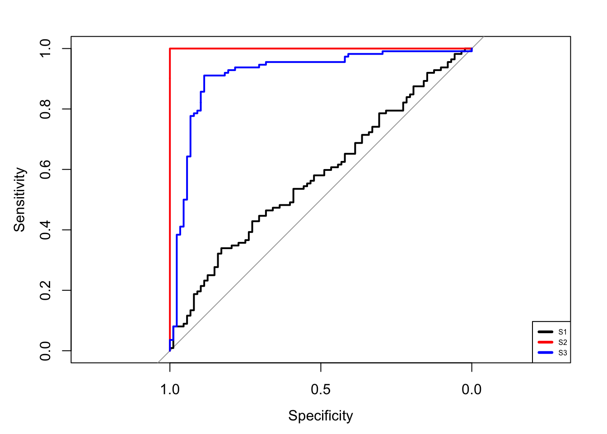

Chapitre 1 Estimation du risque avec caret
1.1 Notion de risque en apprentissage supervisé
L’apprentissage supervisé consiste à expliquer ou prédire une sortie \(y\in\mathcal Y\) par des entrées \(x\in\mathcal X\) (le plus souvent \(\mathcal X=\mathbb R^p\)). Cela revient à trouver un algorithme ou machine représenté par une fonction \[f:\mathcal X\to\mathcal Y\] qui à une nouvelle observation \(x\) associe la prévision \(f(x)\). Bien entendu le problème consiste à chercher le meilleur algorithme pour le cas d’intérêt. Cette notion nécessite de meilleur algorithme la définition de critères que l’on va chercher à optimiser. Les critères sont le plus souvent définis à partir du fonction de perte \[\begin{align*} \ell:\mathcal Y \times\mathcal Y & \mapsto \mathbb R^+ \\ (y,y^\prime) & \to\ell(y,y^\prime) \end{align*}\] où \(\ell(y,y^\prime)\) représentera l’erreur (ou la perte) pour la prévision \(y^\prime\) par rapport à l’observation \(y\). Si on représente le phénomène d’intérêt par un couple aléatoire \((X,Y)\) à valeurs dans \(\mathcal X\times\mathcal Y\), on mesurera la performance d’un algorithme \(f\) par son risque \[\mathcal R(f)=\mathbf E[\ell(Y,f(X))].\] Trouver le meilleur algorithme revient alors à trouver \(f\) qui minimise \(\mathcal R(f)\). Bien entendu, ce cadre possède une utilité limitée en pratique puisqu’on ne connaît jamais la loi de \((X,Y)\), on ne pourra donc jamais calculé le vrai risque d’un algorithme \(f\). Tout le problème va donc être de trouver l’algorithme qui a le plus petit risque à partir de \(n\) observations \((x_1,y_1),\dots,(x_n,y_n)\).
Nous verrons dans les chapitres suivants plusieurs façons de construire des algorithmes mais, dans tous les cas, un algorithme est représenté par une fonction \[f_n:\mathcal X\times(\mathcal X\times\mathcal Y)^n\to\mathcal Y\] qui, pour une nouvelle donnée \(x\), renverra la prévision \(f_n(x)\) calculée à partir de l’échantillon qui vit dans \((\mathcal X\times\mathcal Y)^n\). Dès lors la question qui se pose est de calculer (ou plutôt d’estimer) le risque (inconnu) \(\mathcal R(f_n)\) d’un algorithme \(f_n\). Les techniques classiques reposent sur des algorithmes de type validation croisée. Nous les mettons en œuvre dans cette partie pour un algorithme simple : les \(k\) plus proches voisins. On commencera par programmer ces techniques “à la main” puis on utilisera le package caret qui permet de calculer des risques pour quasiment tous les algorithmes que l’on retrouver en apprentissage supervisé.
1.2 La validation croisée
On cherche à expliquer une variable binaire \(Y\) par deux variables quantitatives \(X_1\) et \(X_2\) à l’aide du jeu de données suivant
n <- 2000
set.seed(12345)
X1 <- runif(n)
X2 <- runif(n)
set.seed(9012)
R1 <- X1<=0.25
R2 <- (X1>0.25 & X2>=0.75)
R3 <- (X1>0.25 & X2<0.75)
Y <- rep(0,n)
Y[R1] <- rbinom(sum(R1),1,0.25)
Y[R2] <- rbinom(sum(R2),1,0.25)
Y[R3] <- rbinom(sum(R3),1,0.75)
donnees <- data.frame(X1,X2,Y)
donnees$Y <- as.factor(donnees$Y)
ggplot(donnees)+aes(x=X1,y=X2,color=Y)+geom_point()On considère la perte indicatrice : \(\ell(y,y^\prime)=\mathbf 1_{y\neq y^\prime}\), le risque d’un algorithme \(f\) est donc \[\mathcal R(f)=\mathbf E[\mathbf 1_{Y\neq f(X)}]=\mathbf P(Y\neq f(X)),\] il est appelé probabilité d’erreur ou erreur de classification.
Séparer le jeu de données en un échantillon d’apprentissage dapp de taille 1500 et un échantillon test dtest de taille 500.
On considère la règle de classification des \(k\) plus proches voisins. Pour un entier \(k\) plus petit que \(n\) et un nouvel individu \(x\), cette règle affecte à \(x\) le label majoritaire des \(k\) plus proches voisins de \(x\). Sur R on utilise la fonction knn du package class. On peut par exemple obtenir les prévisions des individus de l’échantillon test de la règle des 3 plus proches voisins avec
Calculer l’erreur de classification de la règle des 3 plus proches voisins sur les données test (procédure validation hold out).
Expliquer la fonction knn.cv.
Cette fonction permet, pour la règle des plus proches voisins, de prédire le groupe de chaque individu par validation croisée leave-one-out : \[\widehat y_i=g_{k,i}(x_i),\quad i=1,\dots,n\] où \(g_{k,i}\) désigne la règle de \(k\) plus proche voisins construites à partir de l’échantillon amputé de la \(i\)ème observation.
Calculer l’erreur de classification de la règle des 3 plus proches voisins par validation croisée leave-one-out.
On peut alors estimer l’erreur de la règle des 10 ppv par \[\frac{1}{n}\sum_{i=1}^n1_{g_{k,i}(x_i)\neq y_i}.\]
On considère le vecteur de plus proches voisins suivant :
Sélectionner une valeur de \(k\) dans ce vecteur à l’aide d’une validation hold out et d’un leave-one-out :
On calcule l’erreur de classification par validation hold out pour chaque valeur de \(k\) :
err.ho <- rep(0,length(K_cand)) for (i in 1:length(K_cand)){ knni <- knn(dapp[,1:2],dtest[,1:2],cl=dapp$Y,k=K_cand[i]) err.ho[i] <- mean(knni!=dtest$Y) }Puis on choisit la valeur de \(k\) pour laquelle l’erreur est minimale.
On de même chose avec la validation croisée leave-one-out :
Faire la même chose à l’aide d’une validation croisée 10 blocs. On pourra construire les blocs avec
err.cv <- rep(0,length(K_cand)) prev <- donnees$Y for (i in 1:length(K_cand)){ for (j in 1:length(blocs)){ train <- donnees[blocs[[j]],] test <- donnees[-blocs[[j]],] prev[-blocs[[j]]] <- knn(train[,1:2],test[,1:2],cl=train$Y,k=K_cand[i]) } err.cv[i] <- mean(prev!=donnees$Y) } K_cand[which.min(err.cv)]
1.3 Le package caret
Dans la partie précédente, nous avons utiliser des méthodes de validation croisée pour sélectionner le nombre de voisins dans l’algorithme des plus proches voisins. L’approche revenait à
- estimer un risque pour une grille de valeurs candidates de \(k\)
- choisir la valeur de \(k\) qui minimise le risque estimé.
Cette pratique est courante en machine learning : on la retrouve fréquemment pour calibrer les algorithmes. Le protocole est toujours le même, pour un méthode donnée il faut spécifier :
- une grille de valeurs pour les paramètres
- un risque
- un algorithme pour estimer le risque.
Le package caret permet d’appliquer ce protocole pour plus de 200 algorithmes machine learning. On pourra trouver une documentation complète à cette url http://topepo.github.io/caret/index.html. Deux fonctions sont à utiliser :
- traincontrol qui permettra notamment de spécifier l’algorithme pour estimer le risque ainsi que les paramètres de cet algorithme ;
- train dans laquelle on renseignera les données, la grille de candidats…
On reprend les données de la partie précédente.
Expliquer les sorties des commandes
library(caret) set.seed(321) ctrl1 <- trainControl(method="LGOCV",number=1) KK <- data.frame(k=K_cand) caret.ho <- train(Y~.,data=donnees,method="knn",trControl=ctrl1,tuneGrid=KK)caret.ho k-Nearest Neighbors 2000 samples 2 predictor 2 classes: '0', '1' No pre-processing Resampling: Repeated Train/Test Splits Estimated (1 reps, 75%) Summary of sample sizes: 1500 Resampling results across tuning parameters: k Accuracy Kappa 1 0.602 0.1956346 21 0.690 0.3649415 41 0.694 0.3736696 61 0.706 0.3992546 81 0.700 0.3867338 101 0.712 0.4122641 121 0.700 0.3882944 141 0.706 0.4017971 161 0.700 0.3903629 181 0.702 0.3941710 201 0.700 0.3898471 221 0.696 0.3806637 241 0.692 0.3714491 261 0.698 0.3829078 281 0.692 0.3693074 301 0.696 0.3764358 321 0.682 0.3474407 341 0.682 0.3468831 361 0.678 0.3352601 381 0.672 0.3214167 401 0.668 0.3113633 421 0.666 0.3057172 441 0.658 0.2853800 461 0.658 0.2841354 481 0.654 0.2732314 Accuracy was used to select the optimal model using the largest value. The final value used for the model was k = 101. plot(caret.ho)
On obtient ici l’accuracy (1 moins l’erreur de classification) pour chaque valeur de \(k\) calculé par validation hold out. Cette technique a été précisée dans la fonction trainControl via l’option
method=“LGOCV”. Un autre indicateur est calculé : le kappa de Cohen. Cet indicateur peut se révéler pertinent en présence de données déséquilibrées, on pourra trouver de l’information sur cet indicateur dans ce document https://lrouviere.github.io/INP-HB/cours_don_des.pdfEn modifiant les paramètres du code précédent, retrouver les résultats de la validation hold out de la partie précédente. On pourra utiliser l’option
indexdans la fonction trainControl.ctrl2 <- trainControl(method="LGOCV",number=1,index=list(indapp)) caret.ho2 <- train(Y~.,data=donnees,method="knn",trControl=ctrl2,tuneGrid=KK)On retrouve bien la même valeur de \(k\).
Utiliser caret pour sélectionner \(k\) par validation croisée leave-one-out.
ctrl3 <- trainControl(method="LOOCV",number=1) caret.loo <- train(Y~.,data=donnees,method="knn",trControl=ctrl3,tuneGrid=KK) caret.loo$bestTuneOn remarque que le temps de calcul ets beaucoup plus long qu’avec la fonction knn.cv. Cela vient du fait que train recalcule l’algorithme des kppv \(n\) fois tandis que knn.cv utilise une astuce matricielle pour faire la validation croisée leave-one-out. Heureusement, on a quand même le même résultat :
Faire de même pour la validation croisée 10 blocs en gardant les mêmes blocs que dans la partie précédente.
ctrl4 <- trainControl(method="cv",index=blocs) caret.cv <- train(Y~.,data=donnees,method="knn",trControl=ctrl4,tuneGrid=KK)Là encore, on retrouve bien la même valeur :
1.4 La courbe ROC
C’est un critère fréquemment utilisé pour mesurer la performance d’un score. Etant donné \((X,Y)\) un couple aléatoire à valeurs dans \(\mathcal X\times \{-1,1\}\), on rappelle qu’un score est une fonction \(S:\mathcal X\to\mathbb R\). Dans la plupart des cas, un score s’obtient en estimant la probabilité \(\mathbf P(Y=1|X=x)\). Pour un seuil \(s\in\mathbb R\) fixé, un score possède deux types d’erreur \[\alpha(s)=\mathbf P(S(X)\geq s|Y=-1)\quad\text{et}\quad\beta(s)=\mathbf P(S(X)< s|Y=1).\] La courbe ROC est la courbe paramétrée définie par : \[\left\{ \begin{array}{l} x(s)=\alpha(s)=\mathbf P(S(X)>s|Y=-1) \\ y(s)=1-\beta(s)=\mathbf P(S(X)\geq s|Y=1) \end{array}\right.\] Elle permet donc de visualiser sur une seul graphe 2D ces deux erreurs pour toutes les valeurs de seuil \(s\).
On considère dans cet exercice une fonction de score \(S\) que l’on suppose absolument continue.
Montrer que la courbe ROC vit dans le carré \([0,1]^2\).
On note \(x(-\infty)=\lim_{n\to -\infty}x(s)\). On a \[x(-\infty)=\lim_{n\to -\infty}\mathbf P(S(X)>s|Y=-1)=1.\] De même on montre facilement \(y(-\infty)=1\), \(x(\infty)=0\) et \(y(\infty)=0\). On déduit donc que la courbe ROC part du point \((1,1)\) pour arriver au point \((0,0)\) sans quitter le carré \([0,1]^2\).
On suppose dans cette question que \(S\) est parfait, ce qui revient à dire qu’il sépare parfaitement les 2 groupes. Mathématiquement on traduit cela par l’existence d’un seuil \(s^\star\in\mathbb R\) tel que \[\mathbf P(Y=1|S(X)\geq s^\star)=1\quad\textrm{et}\quad\mathbf P(Y=-1|S(X)<s^\star)=1.\] Analyser la courbe ROC du score parfait.
Il est facile de voir que \(\alpha(s^\star)=\beta(s^\star)=0\). Par conséquent la courbe ROC du score parfait passe par le point \((0,1)\). On déduit que la courbe ROC du score parfait est l’union des segments \[[(0,0),(1,0)]\quad\text{et}\quad[(1,0),(1,1)].\]
On suppose dans cette question que \(S\) est aléatoire dans le sens où \(S(X)\) est indépendante de \(Y\) (cela revient à dire que les notes \(S(X)\) n’ont aucun lien avec le groupe). Analyser la courbe ROC d’un tel score.
En utilisant l’indépendance et l’absolu continuité de ^S(X)$ on a \[x(s)=\mathbf P(S(X)>s|Y=-1)=\mathbf P(S(X)>s)=\mathbf P(S(X)\geq s)=\mathbf P(S(X)\geq s|Y=1)=y(s),\] On déduit que la courbe ROC est la première bissectrice.
On dispose de 4 fonctions de score \(S_j(x)\) dont on souhaite visualiser les courbes ROC à partir des valeurs de score calculés sur un échantillon. On trouvera dans le tableau df les scores \(S_j(X_i),i=1,\dots,n\) ainsi que les observations des groupes \(Y_i\)
set.seed(12345)
n <- 200
Y <- rbinom(n,1,0.5)
S1 <- runif(n)
S2 <- S1
S2[Y==1] <- runif(sum(Y==1),0.6,1)
S2[Y==0] <- runif(sum(Y==0),0,0.6)
S3 <- S2
S3[Y==1][1:10] <- runif(10,0,0.6)
S3[Y==0][1:10] <- runif(10,0.6,1)
df <- data.frame(S1,S2,S3,Y=Y)
head(df)
S1 S2 S3 Y
1 0.5885923 0.6301922 0.419557838 1
2 0.8925918 0.7897537 0.006244182 1
3 0.1237949 0.7058358 0.302344248 1
4 0.5133090 0.6922984 0.438635526 1
5 0.6636402 0.2034380 0.806095919 0
6 0.7655420 0.4036820 0.665537030 0Visualiser, pour chaque score, les valeurs de score en fonction de \(Y\). Commenter
df1 <- df %>% pivot_longer(-Y,names_to="Score",values_to="valeurs") ggplot(df1)+aes(x=valeurs,y=Score,color=as.factor(Y))+geom_point()
On remarque que S2 sépare parfaitement les deux groupes. La séparation de S3 est satisfaisante mais pas parfaite. S1 semble qunt à lui ordonner les observations indépendamment du groupe (proche du score aléatoire).
Visualiser sur un même graphe les trois courbes ROC. On pourra utiliser d’abord utiliser la fonction roc du package pROC puis la fonction geom_roc du plotROC.
Avec pROC on peut comobiner les fonction roc et plot.
library(pROC) roc.obj <- roc(Y~.,data=df) plot(roc.obj[[1]]) plot(roc.obj[[2]],add=TRUE,col="red") plot(roc.obj[[3]],add=TRUE,col="blue") legend("bottomright",legend=c("S1","S2","S3"),col=c("black","red","blue"),lwd=3,cex=0.5)
pROC possède également une fonction ggroc qui permet d’obtenir les courbes ROC en ggplot.

Enfin plotROC possède le verbe geom_roc :

Calculer les
AUCà l’aide de la fonction auc.lapply(roc.obj,auc) $S1 Area under the curve: 0.5785 $S2 Area under the curve: 1 $S3 Area under the curve: 0.9148On peut aussi les obtenir avec la syntaxe dplyr
On rappelle que l’AUC vérifier la propriété suivante : si \((X_1,Y_1)\) et \((X_2,Y_2)\) sont indépendantes et de même loi que \((X,Y)\), on a \[AUC(S)=\mathbf P(S(X_1)\geq S(X_2)|(Y_1,Y_2)=(1,-1)).\] Utiliser cette propriété pour retrouver l’AUC de S3.
On peut estimer l’AUC en calculant, parmi les paires qui vérifient \((Y,Y′)=(0,1)\), la proportion de paires qui vérifient \(S(X)<S(X′)\). Si on note \[\mathcal I=\{(i,j),y_i=1,y_j=0\},\] alors l’estimateur s’écrit \[\widehat{AUC}(S)=\frac{1}{|\mathcal I|}\sum_{(i,j)\in\mathcal I}\mathbf 1_{S(X_i)>S(S_j)}.\]
1.5 Compléments
1.5.1 Calcul parallèle
Les validations croisées peuvent se révéler coûteuses en temps de calcul. On utilise souvent des techniques de parallélisation pour améliorer les performances computationnelles. Ces techniques sont relativement facile à mettre en œuvre avec caret, on peut par exemple utiliser la librairie doParallel pour utiliser plusieurs cœurs de la machine. On compare les temps de calculs pour une même validation croisée 10 blocs exécutée avec 1 cœur et 4 cœurs :
library(doParallel)
ctrl4 <- trainControl(method="cv",index=blocs)
cl <- makePSOCKcluster(1)
registerDoParallel(cl)
temps1 <- system.time(ee3 <- train(Y~.,data=donnees,method="knn",trControl=ctrl4,tuneGrid=KK))
stopCluster(cl)
cl <- makePSOCKcluster(4)
registerDoParallel(cl)
temps4 <- system.time(ee3 <- train(Y~.,data=donnees,method="knn",trControl=ctrl4,tuneGrid=KK))
stopCluster(cl)On compare ces deux temps de calcul
Sans surprise, l’exécution est beaucoup plus rapide avec 4 cœurs.
1.5.2 Répéter les méthodes de rééchantillonnage
Les méthodes d’estimation du risque présentées dans cette partie (hold out, validation croisée) sont basées sur du rééchantillonnage. Elles peuvent se révéler sensible à la manière de couper l’échantillon. C’est pourquoi il est recommandé de les répéter plusieurs fois et de moyenner les erreurs sur les répétitions. Ces répétitions sont très faciles à mettre en œuvre avec caret, par exemple pour
la validation hold out on utilise l’option
number:la validation croisée on utilise les options
repeatedcvetrepeats:
1.5.3 Modifier le risque
Enfin nous avons uniquement considéré l’erreur de classification. Il est bien entendu possible d’utiliser d’autres risques pour évaluer les performances. C’est l’option metric de la fonction train qui permet généralement de spécifier le risque, si on est par exemple intéressé par l’aire sur la courbe ROC (AUC) on fera :
donnees1 <- donnees
names(donnees1)[3] <- "Class"
levels(donnees1$Class) <- c("G0","G1")
ctrl <- trainControl(method="LGOCV",number=1,classProbs=TRUE,summary=twoClassSummary)
caret.auc <- train(Class~.,data=donnees1,method="knn",trControl=ctrl,tuneGrid=KK,metric="ROC")On obtient ici pour chaque valeur de \(k\), l’AUC ainsi que les sensibilité et spécificité :
caret.auc
k-Nearest Neighbors
2000 samples
2 predictor
2 classes: 'G0', 'G1'
No pre-processing
Resampling: Repeated Train/Test Splits Estimated (1 reps, 75%)
Summary of sample sizes: 1500
Resampling results across tuning parameters:
k ROC Sens Spec
1 0.6338315 0.5937500 0.6739130
21 0.7488031 0.6473214 0.8152174
41 0.7599072 0.6696429 0.8115942
61 0.7554590 0.6785714 0.8188406
81 0.7586698 0.6875000 0.8224638
101 0.7628025 0.6785714 0.8333333
121 0.7603196 0.6830357 0.8333333
141 0.7605703 0.6830357 0.8297101
161 0.7625194 0.6875000 0.8224638
181 0.7616945 0.6875000 0.8188406
201 0.7609990 0.6830357 0.8188406
221 0.7582411 0.6696429 0.8188406
241 0.7567854 0.6607143 0.8224638
261 0.7563406 0.6473214 0.8188406
281 0.7546260 0.6383929 0.8297101
301 0.7530328 0.6294643 0.8333333
321 0.7554914 0.6205357 0.8297101
341 0.7530166 0.6205357 0.8369565
361 0.7518925 0.5848214 0.8405797
381 0.7500970 0.5357143 0.8550725
401 0.7472179 0.5133929 0.8586957
421 0.7472907 0.4866071 0.8695652
441 0.7432550 0.4732143 0.8768116
461 0.7429720 0.4598214 0.8840580
481 0.7404487 0.4241071 0.8876812
ROC was used to select the optimal model using the
largest value.
The final value used for the model was k = 101.Et on choisira la valeur de \(k\) qui maximise l’AUC :